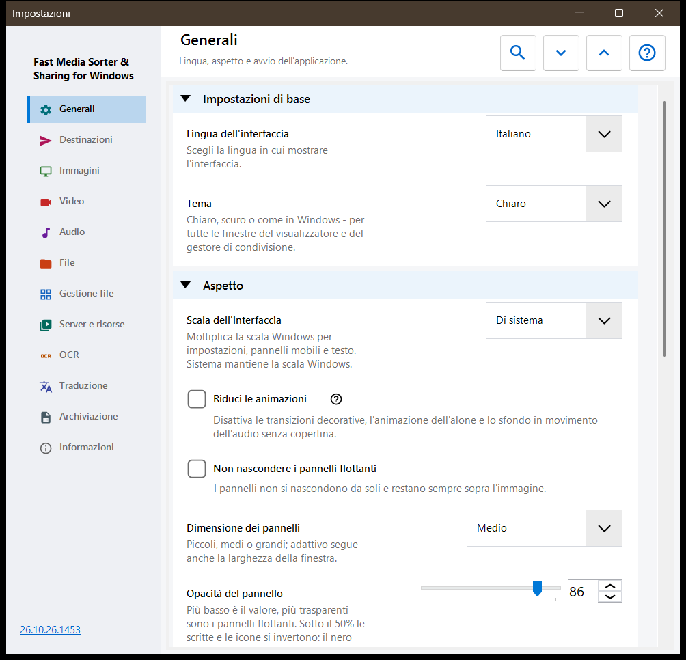
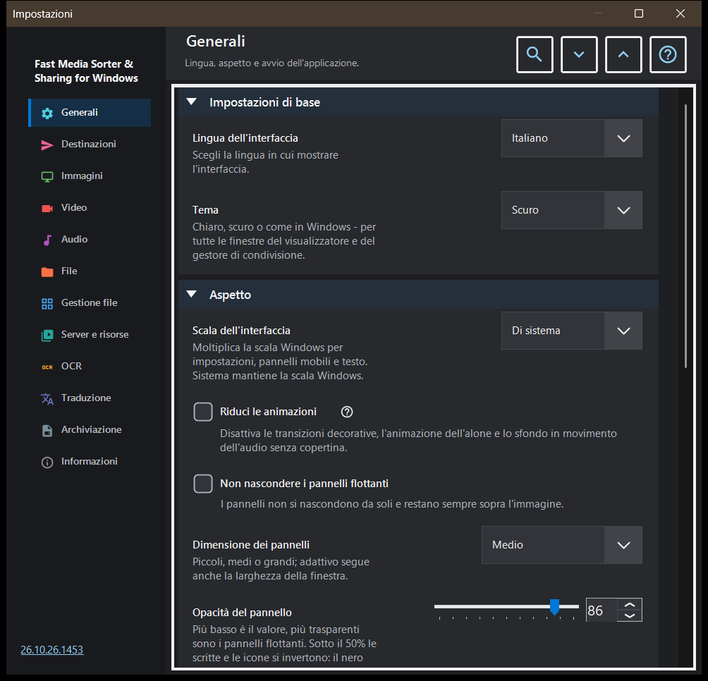

Impostazioni
Impostazioni
Scopo
La finestra Impostazioni contiene tutte le opzioni del visualizzatore. Si apre con F2, con il pulsante «Impostazioni» della barra degli strumenti oppure dalla gestione file del pannello immagini con il suo pulsante «Impostazioni..», che salta direttamente alla pagina Gestione file. Le pagine sono elencate in una barra laterale a sinistra e i gruppi di una pagina si possono comprimere.


In questo ordine
- Scegli una pagina nella barra laterale, oppure scrivi una parola in «Cerca impostazioni» per trovare un'opzione.
- Usa «Espandi tutto» e «Comprimi tutto» per aprire o comprimere tutti i gruppi della pagina.
- Cambia le opzioni che ti servono.
- Premi Esc per chiudere la finestra.
Gli elementi
Generali
Lingua e tema, poi l'aspetto dei pannelli mobili: scala dell'interfaccia, animazioni ridotte, fissaggio, dimensione, opacità, angoli, le informazioni sovrapposte e il nascondere il cursore del mouse; il pulsante «Riporta i pannelli al loro posto» rimette al posto abituale tutti i pannelli spostati. Il gruppo Avvio decide cosa succede all'avvio (apri all'avvio, riprendi dall'ultimo file, consenti nuove finestre) e contiene «Mostra di nuovo i passaggi di benvenuto», che riapre la configurazione iniziale. Il gruppo Impostazioni avanzate esporta e importa le impostazioni aggiuntive e ripristina i valori predefiniti.
Destinazioni
Le dieci cartelle in cui i tasti 1-9 e 0 spostano un file; Shift con una cifra della riga superiore copia nella stessa cartella. La griglia ha una riga per tasto: seleziona una riga, poi usa «Una cartella su questo PC..», «Risorse» (una cartella SFTP o SMB) o «Svuota», oppure trascina una cartella sulla riga. Il gruppo Aspetto della tabella delle destinazioni imposta posizione, larghezza, dimensione del testo, opacità e righe visibili della tabella mostrata sopra l'immagine, e «Tabella delle destinazioni sopra l'immagine» attiva o disattiva quella tabella.
Immagini
Come si aprono e appaiono le immagini: scala di una nuova immagine, rotazione automatica secondo il tag EXIF, «Zoom con la rotella», grafica animata tramite il lettore video e le informazioni su dimensione dell'immagine, dimensione del file e data. Sfondo dell'immagine imposta il colore attorno a un'immagine, lo Sfondo prospettico e l'alone (dinamico, animato, velocità). Comportamento della presentazione imposta l'intervallo, l'ordine casuale, se lo scorrimento manuale ferma la presentazione e cosa fa l'interfaccia durante la stessa. La parte avanzata ha il ridimensionamento di qualità e la dimensione della scheda delle miniature.
Video
Se i file video partecipano allo scorrimento, la riproduzione automatica, l'azione alla fine di un clip, il ricordo della posizione e «Audio condiviso: audio e video». Altri gruppi contengono le lingue preferite per audio e sottotitoli e il controllo della riproduzione: cosa fa un clic singolo, il ritardo dei controlli, i controlli in pausa e tre passi di salto.
Audio
Se i file audio partecipano allo scorrimento, l'azione alla fine di un brano, il volume predefinito e l'avvio senza audio. Il gruppo delle informazioni e del controllo contiene la barra audio sempre visibile, il visualizzatore per i file senza copertina e il timer di spegnimento.
File
Gestione dei file: avanzare dopo la copia, cosa succede in caso di conflitto di nomi e dopo una copia o uno spostamento, la riga di stato nelle operazioni sui file, la creazione di una cartella di destinazione mancante, «Elimina nel Cestino» e la conferma dell'eliminazione. Tipi di file comprende sottocartelle, estensioni, documenti, la dimensione dell'anteprima del testo e altri file. Altri gruppi impostano i file e le cartelle recenti, i limiti degli archivi e i file protetti .fd-sec. Tasti e associazioni ha il pulsante «Scorciatoie da tastiera», che apre la finestra dei tasti di scelta rapida, e le associazioni dei file per immagini e video.
Gestione file
Opzioni della gestione file del pannello immagini: Modalità di visualizzazione (riquadri o elenco), Filtro contenuti, file nascosti e l'azione per i file che non sono multimediali. Il gruppo Posizioni sceglie quali posizioni mostrare (locali, risorse, dispositivi) e ha «Memorizza ordinamento».
Server e risorse
L'elenco Server e cartelle di rete contiene le risorse SFTP e SMB che il visualizzatore può sfogliare e usare come destinazioni. Il gruppo Android / SFTP serve a pubblicare cartelle di questo PC via SFTP per l'app Android; contiene la guida alla connessione e il pulsante «Gestisci il server SFTP per il client Android..».
OCR
«Attiva OCR» attiva il riconoscimento del testo, e «Esegui automaticamente» lo fa partire da solo. Il gruppo Riconoscimento del testo imposta la lingua di origine, la qualità, la modalità e il download dei dati linguistici.
Traduzione
Scegli il servizio («Servizio di traduzione») e la lingua di destinazione («Lingua di traduzione»); altri campi contengono l'indirizzo del servizio, il server Ollama locale, il modello e la chiave API. Il gruppo Traduzione sopra l’immagine imposta l'opacità e la visibilità del pannello di traduzione sopra l'immagine.
Archiviazione
Limiti delle cache con un pulsante di svuotamento per ciascuna: immagini decodificate, miniature del pannello immagini, archivi e risorse di rete. La cache su disco dell'OCR ha «Memorizza i risultati su disco», un limite proprio e un pulsante di svuotamento.
Informazioni
Informazioni sul prodotto e link: Aggiornamenti, Reimposta impostazioni, Progetti correlati, Guida del programma, Sito del progetto, GitHub, Versioni, Informativa sulla privacy, Licenza MIT e Componenti di terze parti e licenze. «Invia i log all'autore» mostra una finestra di consenso che elenca cosa finisce nell'archivio e poi lo passa al tuo programma di posta; il programma non apre alcuna connessione di rete per questo.
Documenti
Abilita il lettore PDF separatamente dai filtri. Scegli pagina singola, scorrimento continuo o doppia pagina, colori, zoom, ricerca e limiti cache. I pulsanti pagina cambiano pagina, quelli file cambiano file. Nei controlli di testo B/N, cifre e Canc appartengono al documento; Esc torna alla vista. Il ripristino dell’aspetto conserva posizioni e segnalibri con nome. La lettura vocale usa voci Windows installate. Le password restano nella sessione. Una copia temporanea locale consente di spostare l’originale. L’esportazione normale omette cronologia, segnalibri e personalizzazioni dei documenti.